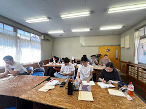
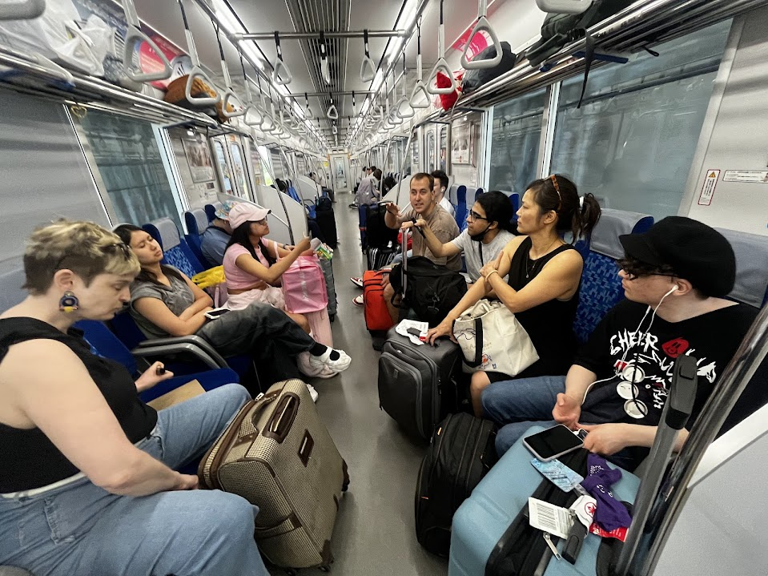
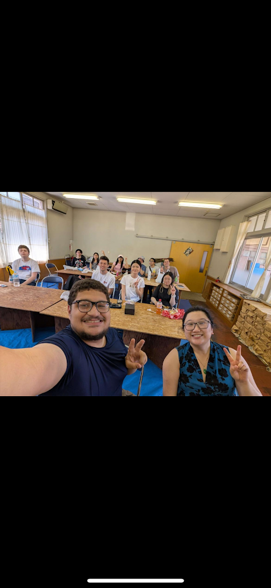
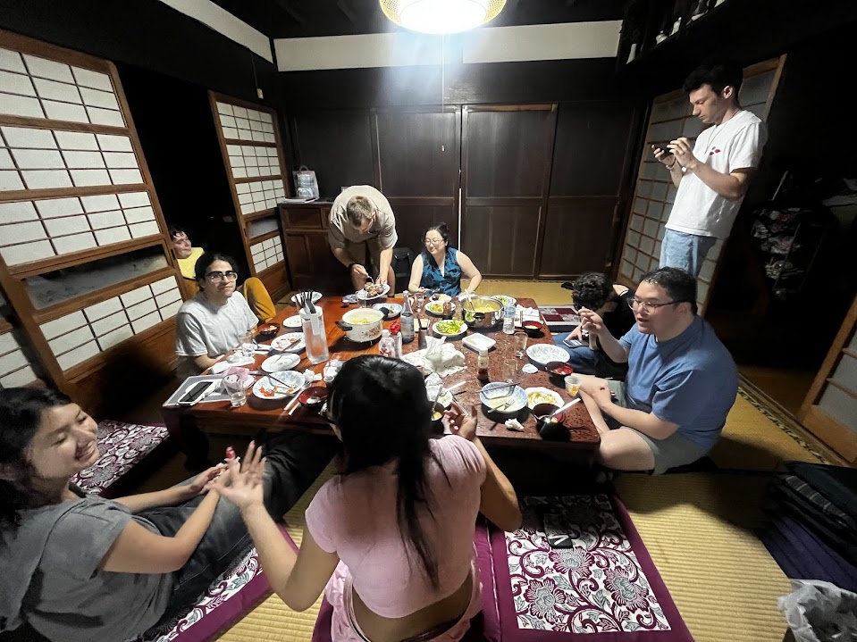
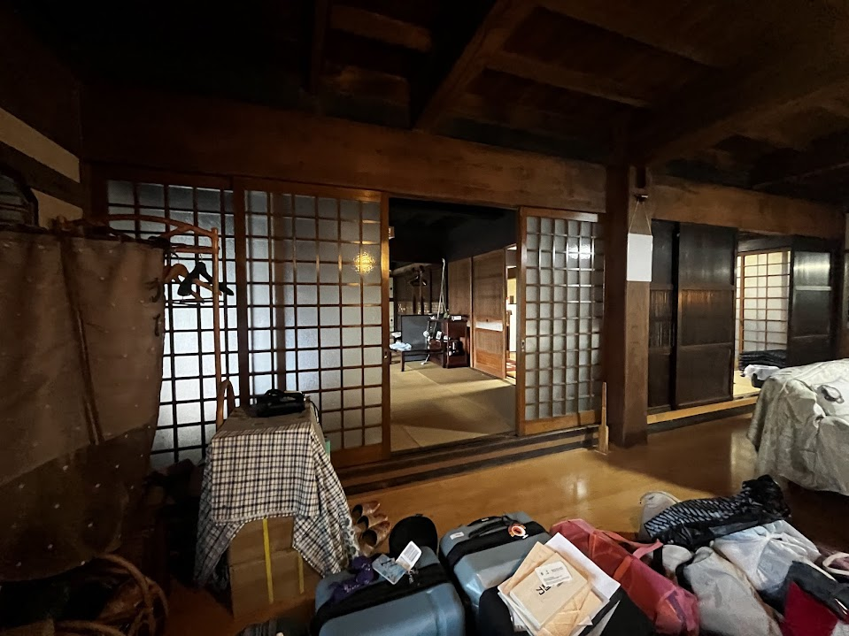

Day 6 – Ogawa, Saitama
After many days in the bustling city of Tokyo, Japan, we packed up all our belongings and set off for our next destination: the countryside town of Ogawa in Saitama, Japan. Hauling all of our luggage from the hostel through multiple train stations and enduring a one-hour train ride was not exactly fun, but once we arrived in Ogawa, the scenery made it all worthwhile. The town was noticeably quieter and more rural, a stark contrast to Tokyo’s high energy. There were very few tall buildings, and the landscape opened up to views of mountains on the horizon in nearly every direction.
This marked the beginning of our Mokuhanga (woodblock printing) workshop, one of the most important components of our experience and grade during the study abroad program. Walking through the peaceful streets of Ogawa and being surrounded by nature felt like stepping into a completely different world compared to the car-filled chaos of Tokyo. Once we arrived at the workshop facility, we were introduced to a place where washi paper is made. The air had a distinct, almost burnt-ramen-like smell, and we could see workers diligently going about their tasks as we made our way to the classroom.Our first day of class focused on preparing sketches for our woodblock prints. These sketches needed approval from the instructors before we could move forward. The design I chose and felt most passionate about was a hot cup of coffee on a plate something that holds deep meaning for me. Coffee has always been a source of comfort, especially on the most stressful days, and I wanted to express that through my artwork.
After several hours of sketching and planning, we took a trip to the local supermarket to buy ingredients for dinner. Since our accommodation for the next few days was an entire house, we decided to have a family-style dinner and cook something for everyone. The meal included hamburg steak, rice, sauce, salad, and a pasta dish.On the way back, we stumbled upon a kind woman tending to her small farm near our house. She generously offered us some of her freshly harvested potatoes, which we gratefully accepted and used in our dinner. Her kindness and willingness to share reinforced the value that Japanese culture places on hospitality and helping others.
Our accommodation itself was stunning a traditional Japanese home with paper walls, tatami mats, and an atmosphere that made it feel like we had stepped back in time. There was even a shrine next door where we could go to pray or simply admire its beauty. The home was the perfect size for our group and gave us a glimpse into what living in such housing might have been like many years ago.


